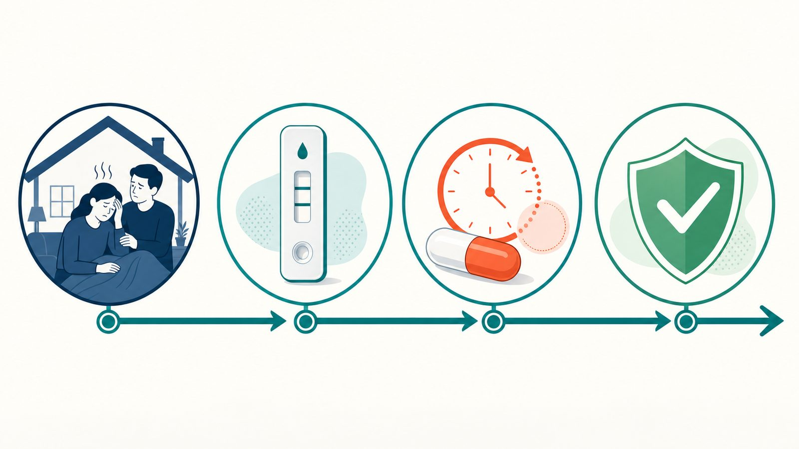

Key Takeaways
- The FDA approved Xocova (ensitrelvir) on May 29, 2026, for post-exposure prophylaxis of COVID-19 after contact with someone who has COVID-19; the FDA's 2026 approvals list still showed this approval when checked on November 15, 2026.[1] Shionogi describes it as the first and only oral option to help prevent COVID-19 after exposure.[3]
- In the SCORPIO-PEP Phase 3 trial, COVID-19 developed in 2.9% of household contacts given ensitrelvir versus 9.0% given placebo (risk ratio 0.33), a 67% relative reduction, with treatment started within 72 hours of the index patient's symptom onset.[2][3]
- Unlike Paxlovid, which pairs nirmatrelvir with ritonavir, ensitrelvir does not need a booster such as ritonavir. Ensitrelvir is itself a strong CYP3A inhibitor, so a medication review is still essential.[4][6][12]
- Xocova is a 5-day once-daily oral regimen (375 mg on day 1, 125 mg on days 2 to 5). The label says to begin it as soon as possible and within 72 hours following contact with someone who has COVID-19, so prompt evaluation by telehealth or in person matters.[4]
- Earlier options fell short: in one randomized trial, hydroxychloroquine did not prevent COVID-19 in exposed contacts, and the monoclonal antibody REGEN-COV, authorized for post-exposure use, was restricted where variants did not respond to it and later had its authorization revoked.[9][10][11]
Why a PEP Option for COVID-19 Matters in 2026
COVID-19 has not disappeared. By 2026, SARS-CoV-2 circulates as an endemic respiratory pathogen, still causing serious illness in older adults, immunocompromised individuals, and people with significant comorbidities. Vaccines continue to reduce severe disease, but immunity wanes and new subvariants emerge regularly. For someone in a high-risk household who has just been exposed to an infected family member, the question is no longer just "did I get vaccinated?" It is "is there anything I can take right now to reduce my chances of getting sick?"
Until May 2026, the honest answer to that question was: not really. In a double-blind randomized trial of asymptomatic contacts of people with confirmed COVID-19, hydroxychloroquine as post-exposure prophylaxis did not lower the rate of COVID-19 (4.2% versus 4.5% with placebo).[9] The monoclonal antibody combination REGEN-COV, given by intravenous infusion or subcutaneous injection, was authorized for post-exposure prophylaxis after a trial showed an 81% reduction in symptomatic COVID-19 among household contacts in its primary analysis.[10] In January 2022, the FDA stopped authorizing it where exposure was likely due to a variant that does not respond to it,[11] and the FDA has since revoked its Emergency Use Authorization.[10] That left the window between exposure and illness without an approved oral medicine to fill it.
The FDA's approval of Xocova (ensitrelvir) on May 29, 2026, changes that picture.[1] The trial report notes that, before ensitrelvir, no antiviral agents were approved for post-exposure prophylaxis in household contacts of people with COVID-19.[2] Xocova is taken after a known exposure, before symptoms begin, to reduce the chance of developing COVID-19.[4]
What Xocova Is
Xocova (ensitrelvir) is an oral antiviral tablet from Shionogi & Co., Ltd. (Osaka, Japan), created through joint research between Hokkaido University and Shionogi.[3] It inhibits the SARS-CoV-2 main protease, an enzyme the virus needs to cut its long polyproteins into the working parts it uses to replicate.[6]
This places ensitrelvir in the same pharmacological class as nirmatrelvir, the active component of Paxlovid. Both target the viral main protease (Mpro, also called 3CL protease). Nirmatrelvir forms a covalent bond with the enzyme. Ensitrelvir is the first noncovalent, nonpeptide oral Mpro inhibitor; it sits in the enzyme's substrate-binding pocket and is held there by a network of hydrogen bonds rather than a covalent bond. In one laboratory study, the two drugs inhibited the enzyme at similar concentrations (IC50 0.049 µM for ensitrelvir and 0.044 µM for nirmatrelvir), and both remained effective against main protease enzymes from all five SARS-CoV-2 variants of concern tested.[6]
The more clinically relevant distinction involves drug interactions. Paxlovid is nirmatrelvir co-packaged with ritonavir, a CYP3A inhibitor included because it raises nirmatrelvir blood levels.[12] Ensitrelvir does not need a booster such as ritonavir.[6] It is, however, a strong CYP3A inhibitor in its own right and also inhibits P-gp and BCRP, with a terminal half-life of about 42 to 48 hours.[4] The University of Liverpool drug interaction group predicts that its inhibitory effect mostly disappears about 10 days after the last dose,[7] and in a published case report, its effect on tacrolimus levels gradually diminished over 7 to 10 days.[8] The Xocova label lists medicines that must not be taken with it, including simvastatin, colchicine, rifampin, carbamazepine, St. John's wort and triazolam, so skipping ritonavir does not mean skipping the interaction check.[4]
Dosing for the PEP indication: three 125 mg tablets taken together on day 1 (375 mg), then one 125 mg tablet on days 2 through 5, with or without food. The label says to begin Xocova as soon as possible and within 72 hours following contact with an individual who has COVID-19.[4] In the trial, participants started within 72 hours of when the household member with COVID-19 began showing symptoms.[2][3]
Xocova received emergency regulatory approval in Japan in November 2022 and full approval there in March 2024, both for treating COVID-19.[3] In the United States, the FDA approved it for post-exposure prophylaxis on May 29, 2026,[1] ahead of the PDUFA action date of June 16, 2026.[3] As of November 15, 2026, the FDA's Novel Drug Approvals for 2026 page (content current as of November 9, 2026) still lists this approval.[1]

The PEP Evidence
The FDA approval rests on SCORPIO-PEP, a global, double-blind, randomized, placebo-controlled Phase 3 trial.[2][3]
The trial included 2,387 participants aged 12 years and older who had a negative local screening test for SARS-CoV-2, had no symptoms at enrollment, and lived with a household member who had symptomatic COVID-19. The primary analysis included 2,041 participants (1,030 ensitrelvir, 1,011 placebo) who were also confirmed negative by central laboratory RT-PCR at baseline. The trial ran from June 2023 to September 2024. More than 99% of household contacts had antibodies to the SARS-CoV-2 nucleocapsid or spike protein, meaning nearly all had prior infection, vaccination, or both, so this was not an immunologically naive population.[2][3][4]
Participants were randomized 1:1 to ensitrelvir or placebo once daily and began treatment within 72 hours of when their household index patient first developed symptoms. The primary endpoint was COVID-19 by day 10, defined as a central laboratory-confirmed positive RT-PCR plus at least one of 14 prespecified symptoms lasting 48 hours or more.[2][3]
The primary result clearly favored ensitrelvir. Among the 2,041 participants in the primary analysis, 2.9% of those receiving ensitrelvir developed COVID-19 compared with 9.0% in the placebo group (risk ratio 0.33; 95% CI 0.22 to 0.49; P<0.001), a 67% relative risk reduction.[2][3] Put another way, participants receiving ensitrelvir had about one-third the risk of developing COVID-19 of those receiving placebo. No COVID-19-related hospitalizations or deaths were reported.[2]
About 37% of participants in the primary analysis had at least one risk factor for severe COVID-19, and the FDA label states that results were consistent regardless of risk factors.[2][4]
Reported side effects were uncommon. Adverse event rates were similar between arms: 15.1% with ensitrelvir versus 15.5% with placebo, and serious adverse events occurred in 0.2% of each group.[2] The most common adverse reactions were headache (2.9% versus 2.6% with placebo), diarrhea (1.7% versus 1.3%), and cough (1.1% versus 0.6%).[4] Shionogi reports no cases of altered taste (dysgeusia) attributed to Xocova in the trial.[3] By comparison, dysgeusia is one of the most common adverse reactions listed for Paxlovid (5% versus less than 1% with placebo).[12]
Evidence Comparison: PEP Options for COVID-19
| Agent | Indication / Setting | Evidence Summary | Current Status |
|---|---|---|---|
| Xocova (ensitrelvir)[2][4] | COVID-19 PEP: oral, once daily for 5 days, started as soon as possible and within 72 h after contact | SCORPIO-PEP (Phase 3): COVID-19 in 2.9% vs. 9.0% (risk ratio 0.33; P<0.001); results consistent regardless of risk factors; adverse events similar to placebo | FDA approved May 29, 2026 (FDA list current as of Nov. 9, 2026)[1] |
| Paxlovid (nirmatrelvir/ritonavir)[12][13] | COVID-19 treatment (NOT approved for PEP) | EPIC-HR trial: 86% reduction in COVID-19-related hospitalization or death through day 28 in unvaccinated high-risk adults treated within 5 days of symptom onset | FDA approved for treatment (May 2023); label states it is not approved for pre- or post-exposure prophylaxis |
| REGEN-COV (casirivimab/imdevimab)[10][11] | COVID-19 PEP: intravenous infusion or subcutaneous injection | 81% reduction in symptomatic COVID-19 in household contacts (primary analysis); use restricted in January 2022 where exposure was likely due to a non-susceptible variant | Emergency Use Authorization revoked |
| Hydroxychloroquine (HCQ)[9] | COVID-19 PEP: double-blind randomized trial in asymptomatic contacts | COVID-19 in 4.2% vs. 4.5% with placebo (relative risk 0.91; 95% CI 0.52 to 1.60); number needed to treat 333 | No benefit shown as PEP in this trial |
Who Is This For
The approved indication is post-exposure prophylaxis of COVID-19 in adults and adolescents 12 years and older following contact with an individual who has COVID-19.[4] But the more useful clinical question is: who stands to benefit most?
In practice, the patients with the greatest reason to seek PEP are those at higher risk of severe COVID-19 if they become infected. CDC lists age as the strongest risk factor, with risk rising from age 50 and substantially above 65. Its higher-risk list also includes solid organ or stem cell transplant, immunosuppressive medicines, cancer, HIV, diabetes, certain chronic lung diseases, chronic kidney disease, and heart conditions such as heart failure, and CDC notes that being unvaccinated or not up to date on COVID-19 vaccination also raises risk.[14] In SCORPIO-PEP, about 37% of the primary analysis population had at least one risk factor for severe COVID-19, and results were consistent regardless of risk factors.[2][4]
Timing matters. The label says to begin as soon as possible and within 72 hours following contact with someone who has COVID-19,[4] and trial participants started within 72 hours of the index patient's symptom onset.[2] In practice, that means seeking evaluation promptly once a household member becomes sick or tests positive. Waiting for your own symptoms defeats the purpose, because PEP is meant to act before the infection takes hold.
Candidates also need screening for drug interactions, given ensitrelvir's strong CYP3A inhibition. The label also warns that Xocova may cause fetal harm: clinicians verify pregnancy status in females of reproductive potential before starting it, and effective contraception is advised during use and for 2 weeks after the final dose. Hypersensitivity reactions, including anaphylaxis, have been reported.[4] A clinician, whether seen by telehealth or in person, will review the patient's medication list and these risks before prescribing.
What This Means for Patients
The core practical question after a known household exposure is straightforward: get evaluated quickly. Two paths accomplish this, and both are clinically appropriate.
A telehealth visit allows evaluation the same day, any day of the week, without travel or waiting room time. A clinician can review symptom status of the index case, confirm the exposure timeline (essential for confirming the 72-hour window), screen current medications for CYP3A interactions, and prescribe Xocova for same-day pharmacy pickup if appropriate. For patients managing complex comorbidities who already see specialists, a virtual urgent evaluation with their own care team or a telehealth provider may be the fastest route to a decision.
An in-person urgent care visit or appointment with a primary care physician is equally valid, and may be preferred when rapid antigen testing on-site is helpful for confirming the exposure contact was truly COVID-positive, or when the patient's medication complexity warrants an in-person medication reconciliation. Some patients simply prefer the thoroughness of an in-person exam when facing a prevention decision.
Either way, several counseling points apply. Start as soon as possible: the label window is 72 hours following contact with someone who has COVID-19,[4] and in the trial the 72 hours were counted from the index patient's symptom onset.[2] If a patient has already developed symptoms consistent with COVID-19, PEP no longer fits, and they should discuss treatment options with a clinician. Xocova's U.S. approval covers post-exposure prophylaxis only,[4] and in the global SCORPIO-HR treatment trial, ensitrelvir did not significantly shorten time to sustained symptom resolution compared with placebo.[5] Xocova's benefit was shown in a population in which more than 99% had antibodies from prior infection or vaccination, so prior vaccination or infection does not exclude someone from consideration.[4] Patients should also be counseled that CYP3A drug interactions may require temporary changes to other medications, something a prescribing clinician will address during the evaluation.[4]
Bottom Line
The FDA approval of Xocova (ensitrelvir) fills a real gap in the COVID-19 prevention toolkit.[1] A person exposed to COVID-19 at home now has an FDA-approved oral medicine that, in a placebo-controlled Phase 3 trial published in the New England Journal of Medicine, cut the rate of COVID-19 from 9.0% to 2.9%.[2] Once-daily dosing and adverse event rates similar to placebo are practical advantages, but the label also carries warnings about drug interactions, fetal harm and hypersensitivity reactions.[4] The 72-hour window is strict, which makes timely evaluation, through telehealth or in person, the most critical step for any eligible patient after a known exposure.
References
- U.S. Food and Drug Administration. "Novel Drug Approvals for 2026" (row: Xocova, ensitrelvir, approved 5/29/2026). Content current as of November 9, 2026. Accessed November 15, 2026. fda.gov/drugs/novel-drug-approvals-fda/novel-drug-approvals-2026
- Hayden FG, Shinkai M, Clark TW, et al. "Ensitrelvir for Covid-19 Postexposure Prophylaxis in Household Contacts." N Engl J Med. 2026;394(19):1905-1915. doi:10.1056/NEJMoa2509306. pubmed.ncbi.nlm.nih.gov/42127390
- Shionogi & Co., Ltd. "(Corrections) Shionogi Announces FDA Approval of XOCOVA® (ensitrelvir), the First and Only Oral Option to Help Prevent COVID-19 Following Exposure." Press release, June 1, 2026. Accessed November 15, 2026. shionogi.com/global/en/news/2026/06/20260601,2.html
- U.S. Food and Drug Administration. XOCOVA (ensitrelvir) tablets, prescribing information. NDA 220442. Revised May 2026. Accessed November 15, 2026. accessdata.fda.gov/drugsatfda_docs/label/2026/220442Orig1s000lbl.pdf
- Luetkemeyer AF, Chew KW, Lacey S, et al. "Ensitrelvir for the Treatment of Nonhospitalized Adults with COVID-19: Results from the SCORPIO-HR, Phase 3, Randomized, Double-blind, Placebo-Controlled Trial." Clin Infect Dis. 2025;80(6):1235-1244. doi:10.1093/cid/ciaf029. pubmed.ncbi.nlm.nih.gov/39960062/
- Lin M, Zeng X, Duan Y, et al. "Molecular mechanism of ensitrelvir inhibiting SARS-CoV-2 main protease and its variants." Commun Biol. 2023;6(1):694. doi:10.1038/s42003-023-05071-y. nature.com/articles/s42003-023-05071-y
- COVID-19 Drug Interactions Group, University of Liverpool. Site news item on ensitrelvir interactions, March 1, 2023. Accessed November 15, 2026. covid19-druginteractions.org/site_news/43
- Miyata Y, Yamaguchi R, Yamamoto T, et al. "Drug-drug interaction between ensitrelvir and tacrolimus in a patient undergoing treatment for COVID-19: a case report." J Pharm Health Care Sci. 2025;11(1):3. doi:10.1186/s40780-025-00411-y. pmc.ncbi.nlm.nih.gov/articles/PMC11756168/
- Dhibar DP, Arora N, Chaudhary D, et al. "The 'myth of Hydroxychloroquine (HCQ) as post-exposure prophylaxis (PEP) for the prevention of COVID-19' is far from reality." Sci Rep. 2023;13(1):378. doi:10.1038/s41598-022-26053-w. nature.com/articles/s41598-022-26053-w
- U.S. Food and Drug Administration. "FDA authorizes REGEN-COV monoclonal antibody therapy for post-exposure prophylaxis (prevention) for COVID-19." Content current as of December 23, 2024; the page notes that FDA has revoked the Emergency Use Authorization. Accessed November 15, 2026. fda.gov
- U.S. Food and Drug Administration. Letter to Regeneron Pharmaceuticals, Inc., re: Emergency Use Authorization 091 (REGEN-COV), January 24, 2022. Accessed November 15, 2026. fda.gov/media/145610/download
- U.S. Food and Drug Administration. PAXLOVID (nirmatrelvir tablets; ritonavir tablets), co-packaged, prescribing information. Revised January 2025. Accessed November 15, 2026. accessdata.fda.gov/drugsatfda_docs/label/2025/217188s008lbl.pdf
- U.S. Food and Drug Administration. "FDA Approves First Oral Antiviral for Treatment of COVID-19 in Adults." Press release, May 25, 2023. Accessed November 15, 2026. fda.gov/news-events/press-announcements/fda-approves-first-oral-antiviral-treatment-covid-19-adults
- Centers for Disease Control and Prevention. "Underlying Conditions and the Higher Risk for Severe COVID-19." Page dated October 8, 2026. Accessed November 15, 2026. cdc.gov/covid/hcp/clinical-care/underlying-conditions.html